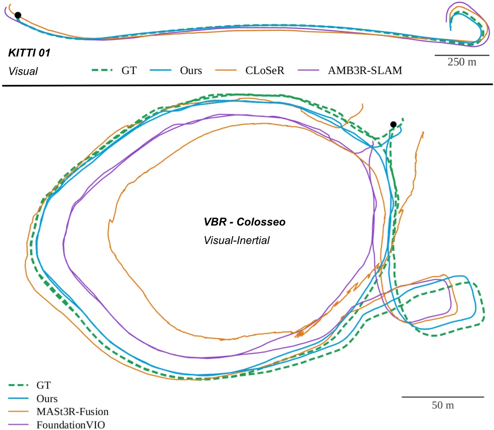
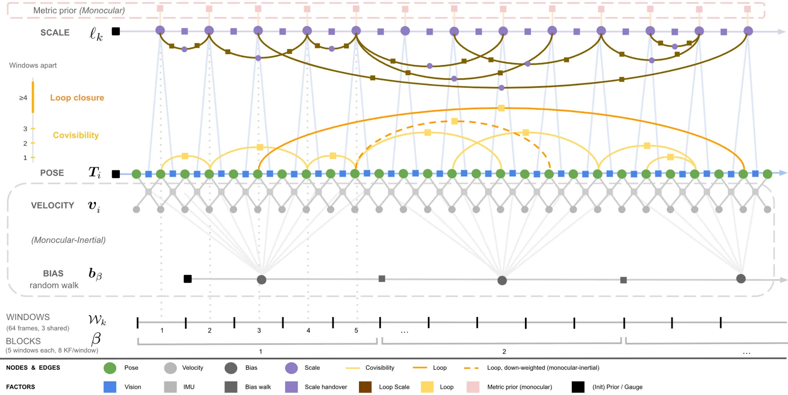

Xtream：给大规模流式重建一个显式的米制状态
Xtream: An Explicit Metric State for Large-Scale Streaming Reconstruction
一句话：把「每个窗口差一个尺度」这件事从隐式记忆挪到因子图上当变量解，再用米制深度模型或 IMU 给每个尺度一个绝对观测，长序列的尺度漂移就被钉住了。
ATE
ATE
relative
FPS
作者、单位与技术谱系 · Research context
作者与单位
研究脉络
- MASt3R-SLAM / VGGT-SLAM / CLoSeR（3DFM + 键帧图）方法上游关系：问题接续：这些工作把 3DFM 的窗口结果接到 Sim(3)、SL(4) 或 SE(3) 键帧图上；Xtream 沿用其图结构，但指出单目尺度漂移仍未被显式建模。[Xtream §2 Related Work]
- FoundationVIO方法上游（并发工作）关系：参数化借用：Xtream 采用其相对尺度参数化，并扩展为同时接受 3DFM 米制先验与 IMU 两类绝对观测。[Xtream §2 Related Work]
- VI3方法上游（初始化）关系：初始化依赖：单目-惯性设置下，首窗尺度 ℓ0 由 VI3 的无真值视觉-惯性初始化给出先验（标准差 1 个对数单位）。[Xtream 附录 A]
- Xtream（本篇）本篇推进关系：把上游的「对齐/参数化」推进为「显式状态」：每窗对数尺度比成为图变量，绝对观测来自米制深度模型或 IMU。[Xtream §1 贡献与表 6]
合作网络
- Xtream 项目页与代码Ernesto Lozano → https://ernestolozano.github.io/xtream关系：官方项目页（论文末尾直接给出，已验证 HTTP 200）[项目页]
- VI3 开源仓库Ernesto Lozano → VI3（Grounding Pretrained 3D Foundation Models with Inertial Cues）关系：公开代码（同名作者的 GitHub 仓库）[GitHub]
- I3A, Universidad de ZaragozaJavier Civera → Ernesto Lozano / Alberto Jaenal关系：共同署名与同一署名单位[arXiv 官方 HTML]
作者、单位、共同署名与项目页为原文/官方页面事实；「技术接续」一栏严格取自原文 Related Work 的自述，未据同名作者推断导师或实验室隶属关系。
方法本质拆解 · What actually changed
是不是微调？
完全没有训练。DA3-Giant、DA3-Metric-Large 与 DINOv2 SALAD 全部按原权重冻结使用，Xtream 只新增一个后端因子图与初始化/剪枝逻辑；所有可调量都是协方差、Huber 阈值、SALAD 阈值这类超参数（表 11），没有新增可学习参数，因此复现不需要训练资源。
有没有额外约束？
约束全部作用在「每窗对数尺度比 ℓk」上：视觉因子用 e^{−ℓk} 缩放平移并同步放大平移噪声，使残差对全局尺度不变；相邻窗尺度因子把它绑到深度中位比 log r_k；一元米制先验用 Huber 把它拉向 log m_k 且只在窗口有基线时生效；回环自带的 ℓ^L 通过两侧 Umeyama 尺度间接传递信息。位姿侧的重力对齐世界系由 IMU 均值加速度或米制深度初始化。
推理/后端到底做了什么？
前端每个窗口一次 3DFM 前向（61 个新帧），后端是增量式 LM：窗口更新加因子走一步，回环更新与最终收尾迭代到收敛（≤100 次）；每 5 个窗口剪一块，保留关键帧与回环帧，被剪帧用近似相对位姿接收邻近关键帧的修正插值。稠密地图是按状态位姿反投影点图，可选再做条件化重预测（16 帧一组、步长 12），没有任何测试时优化网络权重。
方法本质是什么？
本质是把「3DFM 每段的未知尺度」从隐式记忆里的隐含量，提升为图优化里的显式状态，并把尺度观测拆成「链式相对（深度中位比）」与「逐窗绝对（米制深度 / IMU）」两层。它没有让 3DFM 变大或更准，也没有做全局 BA 到像素级，而是靠状态定义让已有的稠密几何在公里级序列上不再累积尺度漂移。
输入图像序列（可选 IMU），冻结 DA3 前端出窗口相对位姿与深度，把每窗对数尺度比作为因子图变量、用米制深度先验或 IMU 预积分给绝对观测，LM 在线求解后得到米制一致的轨迹与点云。

结论与问题Conclusion & Motivation
核心结论
Xtream 的核心结论是：3DFM 流式重建的主要误差不是「局部几何不准」，而是「单目尺度不可观测」，因此修法不该是加更强的网络，而是把尺度变成状态变量。它把每个 64 帧窗口的对数尺度比 ℓk 作为节点放进 SE(3) 因子图，视觉因子在 3DFM 单位下写成 e^{−ℓk} 缩放后的相对位姿残差，从而让整张图对全局尺度不变、避免尺度塌缩；同时用米制深度模型给每个 ℓk 一个 unary 观测，或有 IMU 时用预积分直接让 ℓk 可观测。在公里级基准上这个改动是可量化的：VBR 单目 ATE 5.40 m（CLoSeR 11.15、AMB3R-SLAM 7.42），单目-惯性 3.06 m（FoundationVIO 9.59），KITTI 单目 9.79 m，Oxford Spires 单目 1.67 m。作者也明确限定了边界：小场景（EuRoC、ScaRF）尺度漂移本来就小，优势收窄，EuRoC 单目-惯性甚至不如 ORB-SLAM3。
动机与问题
3DFM 的跨视图注意力只能覆盖有限帧数，工程上有两条扩展路线：重叠窗口/分块后做几何对齐，或用隐式记忆（循环记忆、测试时 fast weights、KV cache）维持局部一致。两条路线都会漂：局部的相对尺度误差在几百个窗口的交接处累积，即使检测到回环，局部优化也不足以恢复全局几何一致。作者把根因定位到「单目几何看不到米制尺度」：交接只约束相邻窗口的尺度比 ℓj−ℓi，绝对尺度在图上没有观测量，于是每个交接处的小系统误差会在长序列上求和。真正的设计问题是：如何在不改动 3DFM 前端的前提下，给每个窗口补一个不随序列累积的绝对尺度观测，并让它在图里和位姿一起被解。
方法Method
方法总览
前端把图像流切成 W=64 帧、重叠 O=3 帧的窗口，冻结的 DA3-Giant 联合处理每个窗口，输出窗口单位下的 SE(3) 位姿、逐像素深度与置信度；对第 0 与第 k−1 窗口共享帧取深度中位比 r_k，把窗口 k 的尺度换算到前一个窗口单位。每窗均匀抽 K=8 个关键帧（含首尾新帧），并用 DINOv2 SALAD 描述子做共视检索与回环检测（阈值 δ=0.7，回环至少隔 4 个窗口，弦弧比过滤 0.85 + 两窗非极大抑制）。后端是因子图：节点为重力对齐世界系下的位姿与速度、每 R=5 个窗口共享的 IMU 零偏、每窗的对数尺度比 ℓk 与每个回环自带的尺度比 ℓ^L；边包括视觉相对位姿、IMU 预积分、零偏随机游走、相邻窗尺度因子、回环位姿与回环尺度因子。求解用 Levenberg–Marquardt，窗口更新走一步，回环与收尾迭代到收敛，并用 5 窗一块、隔块剪枝控制规模。
关键技术细节
三个细节决定成败。第一，视觉因子写在 3DFM 单位里：残差取 Log(ΔT̄ · [R, e^{−ℓk}p])，噪声 σ_t e^{−ℓk}，这样残差对全局尺度不变，避免优化把尺度压向零。第二，回环不直接约束 ℓj−ℓi，而是给回环单独一个 ℓ^L，再用 Umeyama 把两侧窗口各自的 3DFM 位姿对齐到回环那一趟的位姿上，得到每侧相对尺度 s_c^L，写成 ℓc − ℓ^L − log s_c^L；某侧几乎没有基线时 σ_s,c 变大，因子自动变松，消掉 ℓ^L 后又回到按侧加权的直接关系。第三，米制先验是一元因子：m_k 取关键帧上「米制深度中位数 / 窗口深度中位数」的中位数，再对 ℓk 施加 Huber(ℓk − log m_k)/σk，σk 取历史残差 3×1.4826·MAD，且只在窗口真正移动（相机中心散布 ≥ 窗口中位深度的 1%）时才加入——没有基线时深度尺度决定不了位姿尺度。回环进入图前按 innovation 的 Mahalanobis 距离做 Student-t 加权，自由度 ν=4.2、尺度 λ 由图内窗口视觉因子的白化残差推得。

实验Experiments
实验设置
评测覆盖五个数据集：VBR（7 序列，公里级）、Oxford Spires（11 序列）、KITTI（11 序列）、EuRoC（11 序列）与 ScaRF-SLAM（5 序列），指标是 Sim(3)（单目）或 SE(3)（单目-惯性）对齐后的 ATE RMSE，另报 RPE、重建 F-score 与尺度误差/漂移。对照分三组：标定的稠密单目 SLAM（DROID-SLAM、DPV-SLAM、DPV-SLAM++）、非标定的 3DFM 系（VGGT-Long、VGGT-SLAM 2.0、DA3-Streaming、CUT3R、TTT3R、LoGeR、CLoSeR、LingBot-Map、AMB3R-SLAM）、以及单目-惯性（ORB-SLAM3、MASt3R-Fusion、FoundationVIO）；部分基线取自 CLoSeR 论文（标 ‡），其余由作者统一复跑。硬件是单张 RTX 5090（32 GB），窗口 64 帧、重叠 3 帧、每窗 8 关键帧，所有数据集共用一套参数；EuRoC 与 ScaRF 用来检验小场景下结论是否失效。
实验数字与比较
VBR 单目平均 ATE 5.40 m，CLoSeR 11.15、AMB3R-SLAM 7.42、DA3-Streaming 44.09、LoGeR 36.16；VBR 单目-惯性 3.06 m，FoundationVIO 9.59、MASt3R-Fusion 54.99（表 1）。Oxford Spires 单目 1.67 m 对 AMB3R-SLAM 2.32、DA3-Streaming 3.40；单目-惯性 1.11 m 对 FoundationVIO 2.43、ORB-SLAM3 1.46（表 2）。KITTI 单目 9.79 m 对 CLoSeR 12.79、AMB3R-SLAM 13.11（表 3）。尺度质量：单目米制尺度误差 KITTI 7.3%、VBR 10.9%、Oxford 13.7%、EuRoC 23.1%；单目-惯性降到 1.7%/1.5%/1.0%/0.6%，10 窗口尺度漂移单目 2.5%–6.6%、惯性 1.6%–3.6%（表 14）。重建：Oxford Spires 局部 F@5 48.7 对 AMB3R-SLAM 36.4，全局 F@5 18.4 对 11.9，加条件化重预测后提到 52.4 / 20.3（表 12）。运行：KITTI 21.0 FPS、Oxford 10.8 FPS 单目，窗口前向占 46%–82% 墙钟时间，收尾拖尾 0.06–0.17 s（表 13）。
消融/失败边界
单目消融是一条单调收敛链（表 6）：纯 3DFM streaming KITTI 29.7 / VBR 72.0 / Oxford 14.4；加「图 + 深度交接」几乎不变（29.5 / 72.1 / 14.5，相对 1.00）；再加 handover 米制先验骤降到 19.3 / 39.2 / 4.22（0.63）；加共视图 17.6 / 38.1 / 3.05（0.54）；加回环到 9.79 / 5.40 / 1.67（0.16）。这说明「有图但无绝对尺度观测」几乎不产生收益，收益来自米制先验这一层。交接方式对照（表 8）：None 1.00、Umeyama 0.26、仅米制先验 0.21、仅深度 0.17、深度+先验 0.15——深度给局部精度、先验给全局锚定。回环门控（表 15）：单目用拒绝（Rel. 0.95），惯性用 Student-t 加权（0.94），单目改成加权反而 1.03 变差，作者解释为惯性提供了可靠的 innovation 参考。失败边界很清楚：EuRoC 单目-惯性 ATE 0.11 落后 ORB-SLAM3 的 0.04，小场景里尺度漂移本就有限，这套机制的收益被摊薄。
局限与迁移Limitations & Transfer
局限与待核验
作者明确承认的：单目设置下米制轨迹的全局误差明显更大（尺度误差 7.3%–23.1%），因为尺度是从米制深度模型借来的；EuRoC 这类小房间里尺度几乎不漂，IMU 的收益也就消失；所有实验只在一张 RTX 5090 上跑。我们要补的核验项：第一，「米制先验」依赖 DA3-Metric-Large 的逐图尺度，若换到尺度先验系统性偏小的场景（长焦、低纹理），σk 的自适应能否把错误先验压下去，文中只给了五个数据集的整体表现，没有给尺度先验误差的敏感性曲线；第二，W=64 固定窗口 + 5 窗一块剪枝在低帧率或急停场景下，1% 中位深度的「移动判定」可能永不触发，导致某段完全没有绝对观测，这个边界没有实验；第三，表 13 的 FPS 是离线重放的墙钟时间，没有给在线到达率约束下的丢帧/滞后指标；第四，论文未给出开源链接与训练/调参成本，复现需自行搭建 DA3-Giant + DA3-Metric-Large 双模型前向。
与你研究路线的关系
这篇与我们「几何基础模型 + 因子图」的路线几乎同构，最可直接迁移的是三点。其一，把「每个窗口/每个子图的尺度」当成图上的显式节点而不是事后对齐量：我们做多传感器融合时，学习型深度先验进入因子图前总要估一个尺度或仿射参数，Xtream 的 ℓk + 对数域残差 + e^{−ℓ} 噪声缩放正是最干净的一种参数化。其二，「链式相对约束 + 逐单元绝对锚」的双层结构：相邻窗深度中位比给局部精度，米制先验给不累积的绝对观测，这对应我们 GNSS/INS 里「相对观测密、绝对观测稀」时的融合策略，可以用同样的 unary factor 形式接 GNSS 位置或重力对齐。其三，回环按侧加权与 Student-t 重尾加权（λ 由图内残差自估），可作为我们后端鲁棒核的默认实现。下一步最小实验：在现有单目/单目-惯性序列上，固定前端与后端，只切换「尺度是否建模为图变量」，比较 ATE 与 10 窗口尺度漂移，验证收益是否来自状态定义而非前端精度。